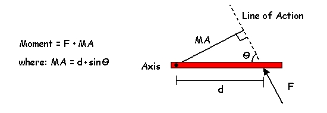
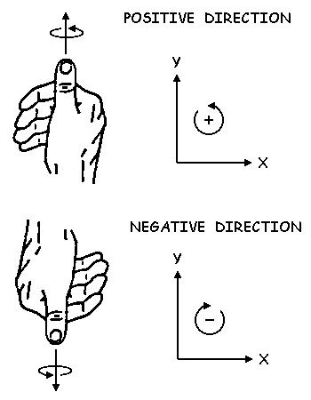
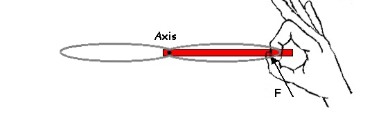

Moment of Force / (Torque)
As we know, a force vector is defined by it's magnitude, direction, and point of application. The point of application allows us to determine the distance from the axis to the point of application (d). The direction of the force allows us to determine the moment arm (MA). Since MA is the perpendicular distance from the axis to the line of action of the force, we always have a right angle triangle and we can use simple trigonometry to calculate the moment arm.
Units: Since the units of force are Newtons (N) and the units for distance are meters (m), the units for torque or moment of force are Netwon meters (N.m).
Direction: Similar to the rectangular components of force which have positive or negative values in the X and Y directions, moments also have a direction. To determine this direction, we use the "Right Hand Rule".
Imagine that the rigid body is a single blade of a propeller. If the propeller is struck at the point of application and in the direction of the force, in which direction would it spin? If it would spin in the counter-clockwise direction, this would be a positive moment. By curling the fingers of your right hand in the direction of the spin, your thumb would be pointing upward or out of the page which indicates a positive moment.
If the spin is clockwise, your fingers would curl the other way and your thumb would be pointing downward into the page which would indicate a negative moment.
